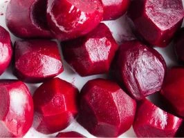
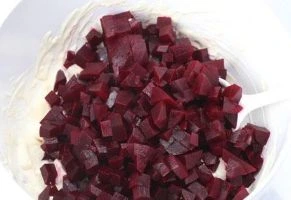
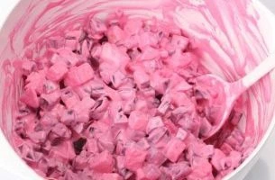

Ingredienser:
- inlagda rödbetor
- majonnäs
- crème fraiche
- senap
- salt
- svartpeppar
- liten röd lök
- röda äpplen
Gör så här:
-
Låt rödbetorna rinna av.
- ca 600 g (ca 360 g avrunnen vikt) inlagda rödbetor

Rödbetorna rinner av. -
Blanda under tiden rödbetorna rinner av ihop dressingen. Mät upp
majonnäs, crème fraiche, senap, salt och peppar i en bunke. Blanda.
Smaka av.
(Var försiktig med senapen, olika senap är olika stark så ta lite först och smaka innan du tillsätter mer. Om senapssmaken blir för stark tillsätt mer majonnäs och crème fraiche.)
- 1 dl majonnäs
- 1 dl crème fraiche
- 0,5-1 msk senap
- 3 krm salt
- 1 krm svartpeppar

Majonnäs, crème fraiche, senap, salt, peppar. 
Dressing blandad och klar. - Hacka röd lök i små bitar, skala äpplena och skär även dem i små bitar. Lägg ner i bunken och blanda med dressingen.
- 1 st (ca 80 g) liten röd lök
- 300 g (ca 2 st) röda äpplen
-
Skär de avrunna rödbetorna i små bitar och blanda även ner dem. Rör
tills röran fått en fin rosa färg.
Ställ in rödbetssalladen i kylskåp och låt den gärna stå där minst några timmar innan servering. Rör om innan servering.



